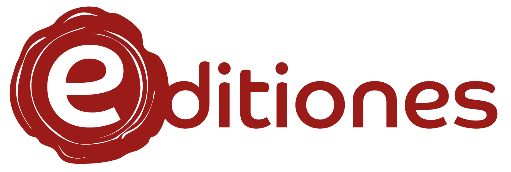

Bienvenue sur l'application de publication du projet E-ditiones.
En cliquant sur Corpus,
vous pourrez accéder à l'ensemble des
textes, à la fois documents imprimés et manuscrits, qui composent le corpus CORPUS17. Ils sont
encodés en XML-TEI et sont également accessibles sur
GitHub.
